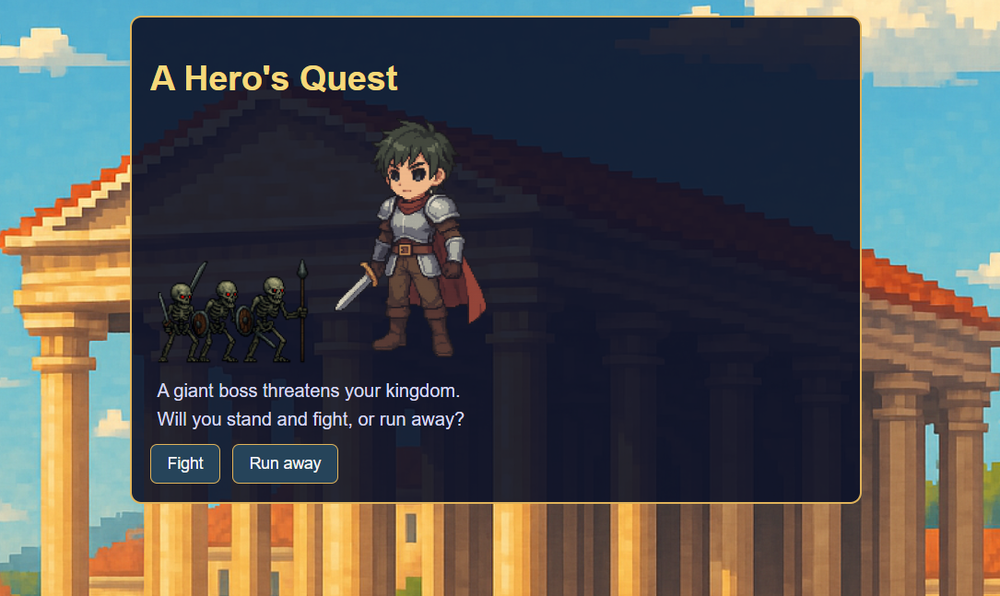
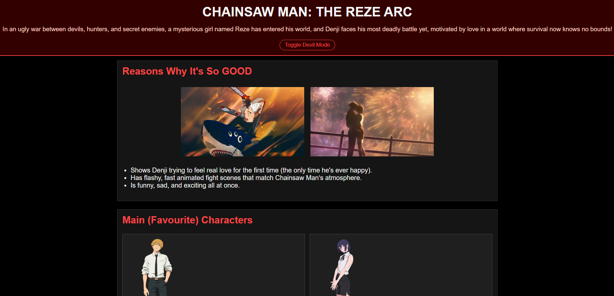
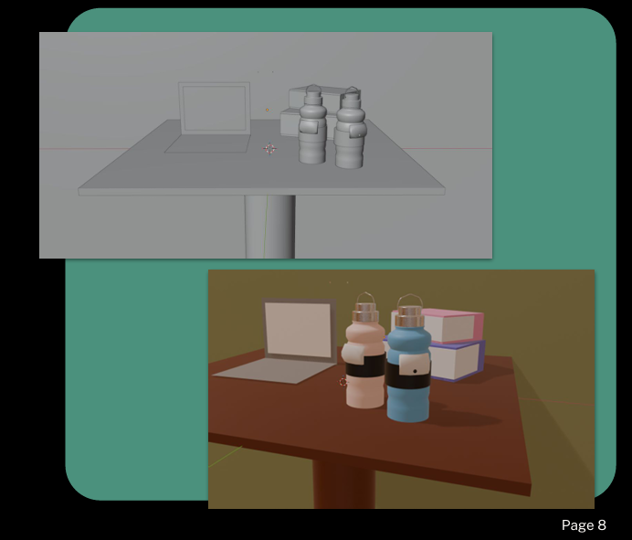

Project One: Interactive Game

In CCT260, I learned how to create an interactive webpage using HTML, CSS, and JavaScript.
For my final project, I made a simple 3-part choice game where the user can choose to save or flee their character's kingdom.
I used JavaScript to create the game logic like hit counters, as well as AI-generated images to create the game background and characters.
Skills Used:
Project Two: Anime Fan Site

In CCT260, I also created a fan-site for my favorite anime series, Chainsaw Man.
The site included stuff about the movie that recently released (The Reze Arc) such as the film's summary, character
profiles and descriptions, and a gallery of images and clips from the movie.
Skills Used:
Project Three: 3D Art Model

In CCT250, I dove deeper into design and 3D-modeling. Me and a friend of mine
decided to create a 3D-model of a student-friendly water bottle. We created mood-boards, sketches,
and a model of the water bottle using Blender. We did a ton of research on the quality and effectiveness
of water bottles and how to make it more ergonomic!
Skills Used:
- Presentation Skills
- Blender
- Research
- Canva and Photoshop